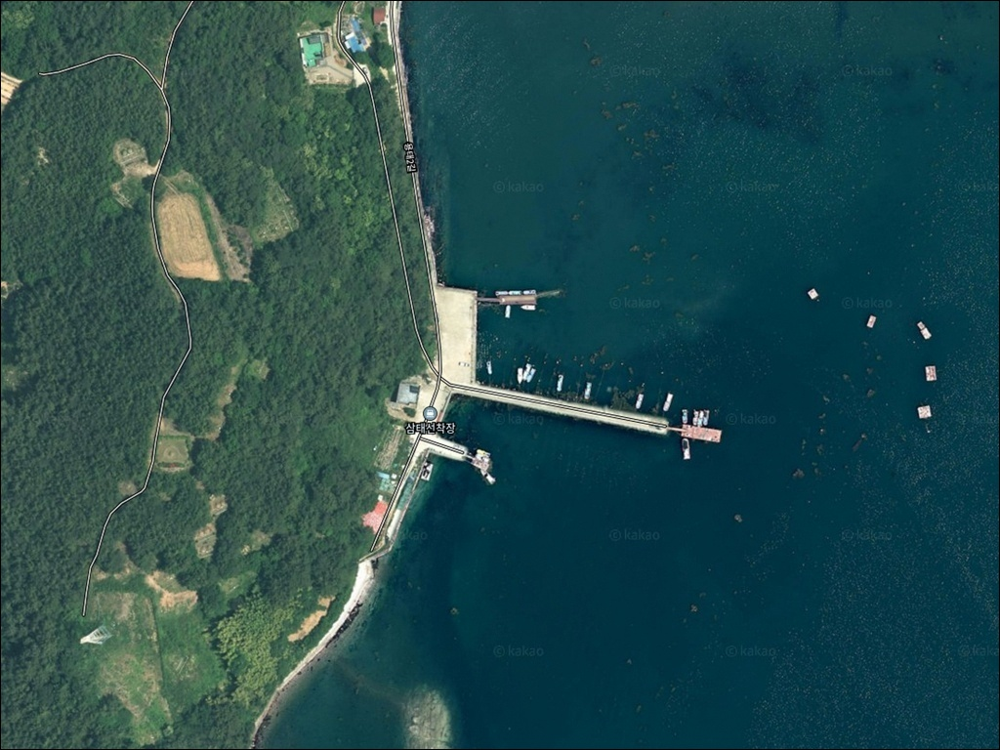
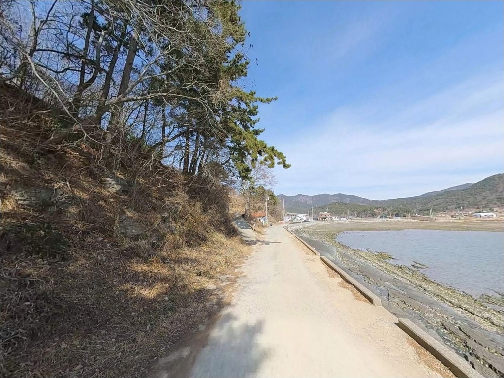
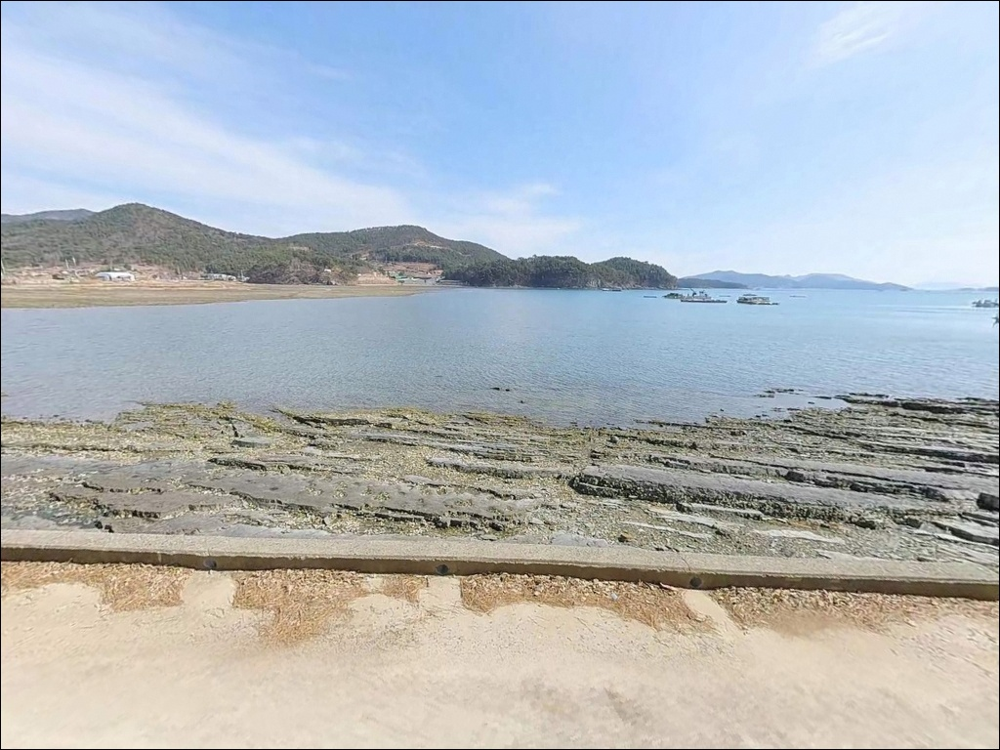
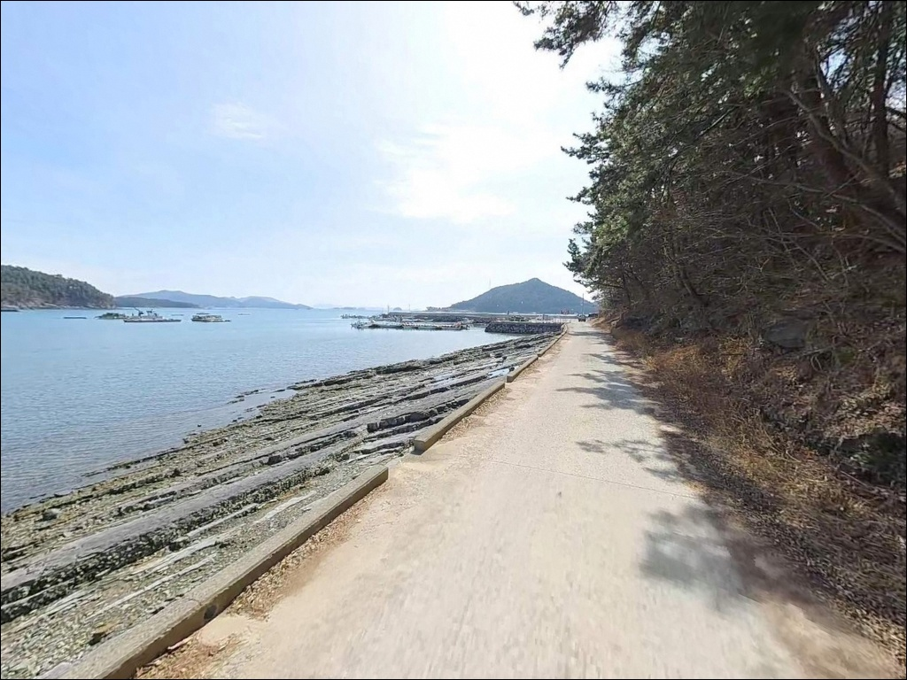
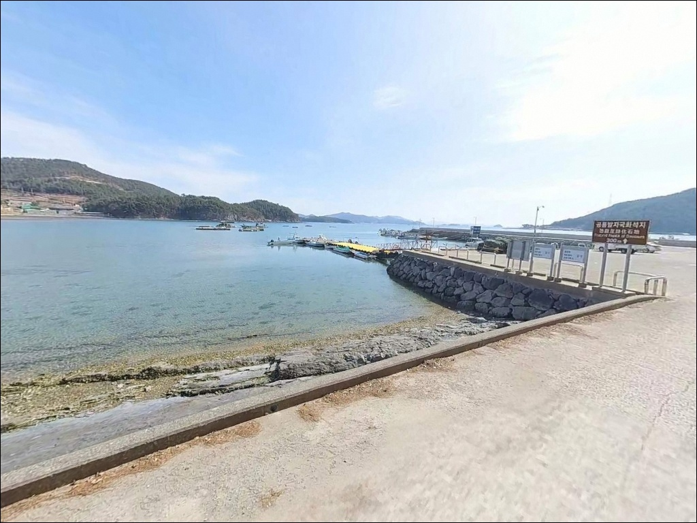
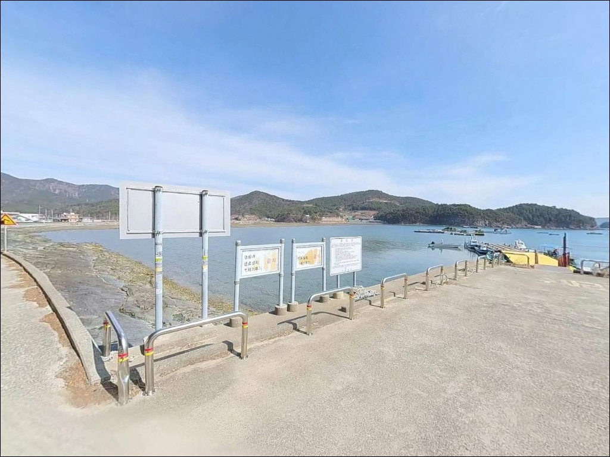
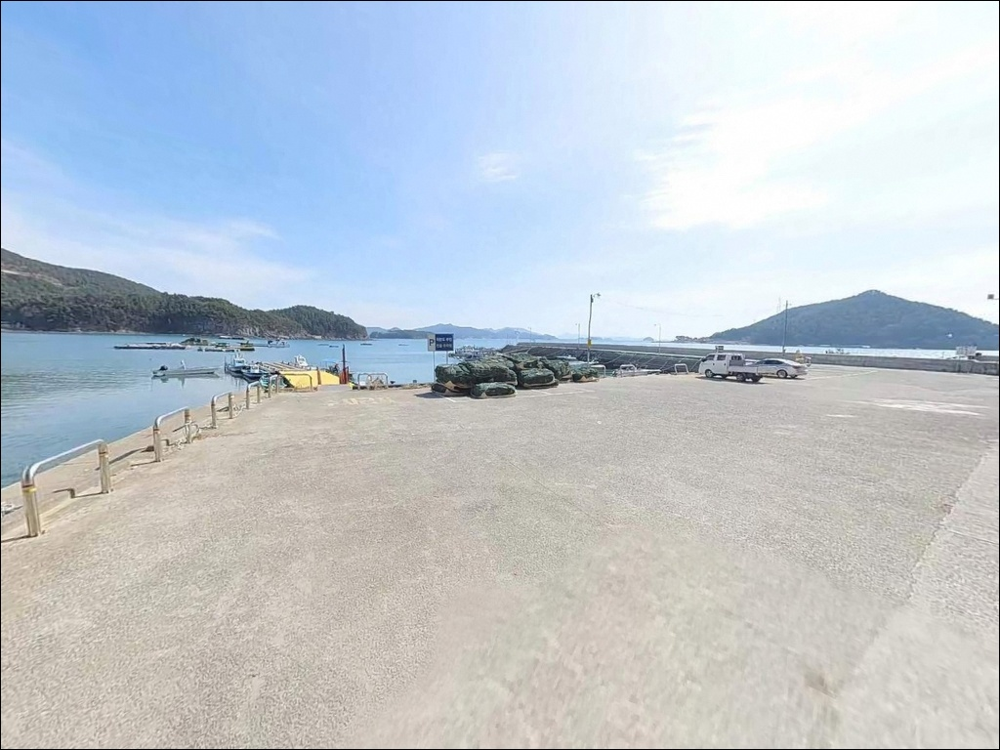
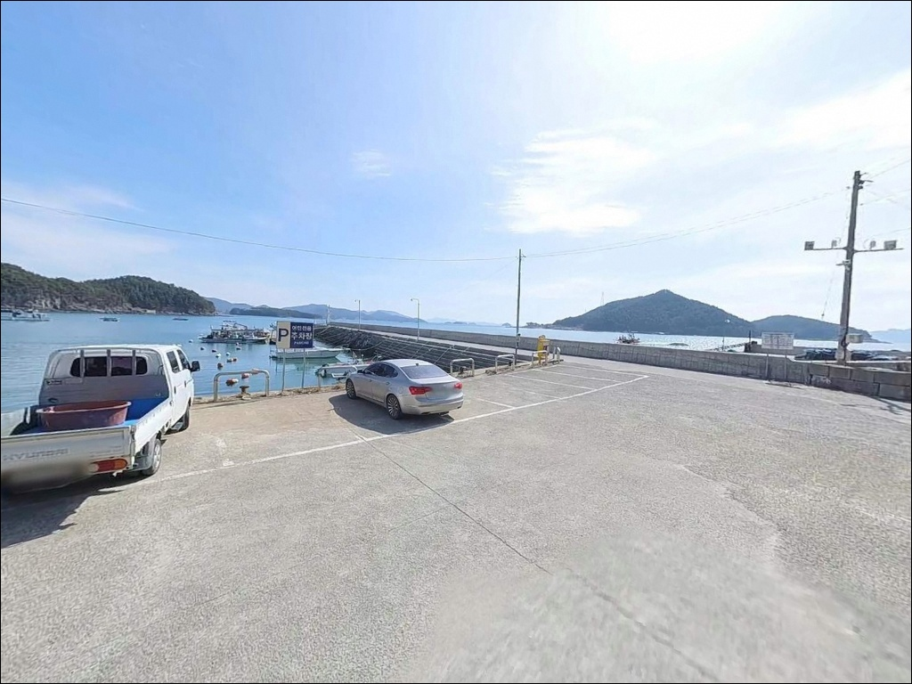
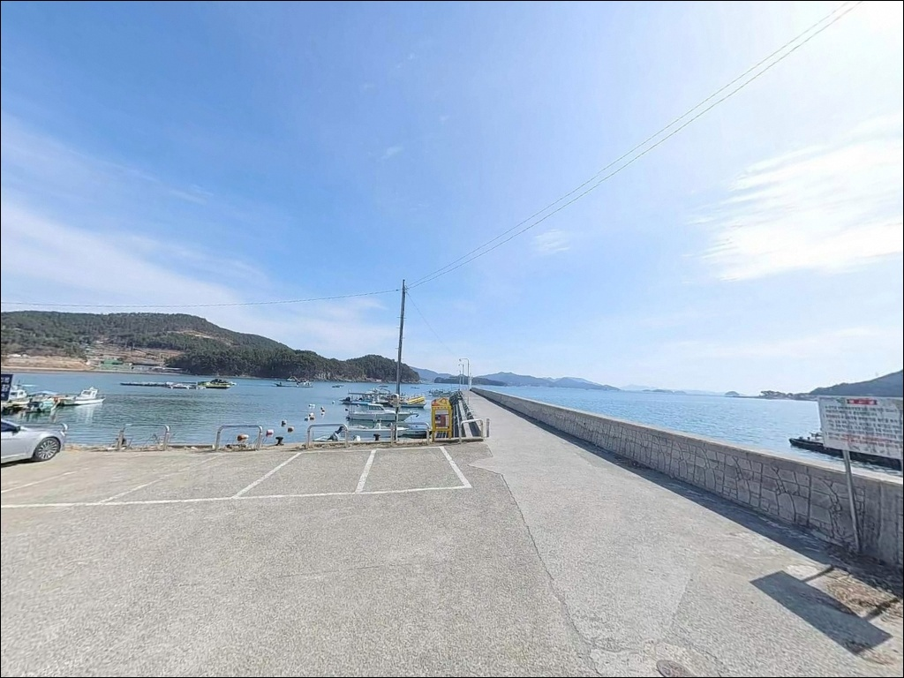

간조에 바닥 드러나는 고성 삼태선착장, 중들물 이후 살아나는 원투낚시


포인트 안내
삼태선착장
경남 고성군 하일면 용태리 335-4
이 선착장은 수심이 얕은 내만 구조입니다.
간조 구간에 진입하면
낚시 공간이 사실상 사라지는 수준으로
바닥이 얕아집니다.
물때를 모르고 도착하면
채비를 펼치기도 전에 자리를 접어야 합니다.
자란만 내측 깊숙이 자리한 용태리 해안은
외해 파도와 강풍 영향이 차단된 정온 수역입니다.
조류가 느리고 수면이 잔잔해
가족 단위 낚시나 가볍게 대 한 대 펼치는 생활낚시에
어울리는 구조를 갖추고 있습니다.
이 글은 삼태선착장의 진입 환경,
차박 체류 조건, 물때 기준,
낚시 방식 적합성에 집중합니다.
조황 단정이나 특정 어종 보장은
이 글의 범위에 포함되지 않습니다.

1. 진입 동선과 포인트 접근 여건
삼태선착장 진입은 77번 국도에서
용태리 마을 안길로 빠져 들어가는 방식입니다.
하일면 중심지에서 해안 방향 지방도를 따라 이동하다
마을 진입로로 꺾으면 선착장까지 연결됩니다.
선착장 직전 구간은 포장 상태가 고르지 않거나
폭이 좁아지는 구간이 포함될 수 있어
초행이라면 속도를 줄이고 들어가는 편이 안전합니다.
승용차 기준으로는 진입과 회차 모두 가능한 구조입니다.
다만 대형 SUV나 캠핑카라면
출발 전 위성지도로 진입로 폭을 미리 확인하는 것이
현장에서 곤란한 상황을 막는 방법입니다.
선착장 입구 공터에서 차량 회차는 가능합니다.
주차는 선착장 전면 콘크리트 포장 공간이
1순위 후보지입니다.
1~2대 수준의 소규모 공간이라
복수 차량이 동시 이용하기는 어렵습니다.
선착장 진입로 초입의 공터가
추가 주차 대안이 됩니다.

2. 차박 환경과 야간 체류 여건
삼태선착장 주변은 민가 밀집도가 낮은
소규모 어촌 마을 구조입니다.
야간 인적이 거의 없고
프라이버시 측면에서는 나쁘지 않은 환경입니다.
다만 가로등 시설이 미비한 편이라
개인 조명 장비는 반드시 지참해야 합니다.
자란만 내만 구조 특성상 외해 파도와 강풍은
차단되는 편이라 야간 체류 시
바람과 파도 소음 부담은 상대적으로 적습니다.
낚시를 마치고 조용히 하룻밤 머무는 용도로는
환경 자체는 나쁘지 않습니다.
단, 주차 공간이 협소해
차박을 메인 목적으로 삼기 전에
공간 여건을 먼저 확인하는 것이 순서입니다.
선착장은 어선이 정박하는 공간이기도 합니다.
야간 고성방가나 과도한 조명 사용은 자제하고,
민가와 인접한 포인트인 만큼
차량 라이트와 소음을 최소화하는 배려가 기본 매너입니다.


3. 주변 편의시설 및 인프라 현황
삼태선착장 반경 3km 이내에는
편의점이나 마트 같은 생활 인프라를 기대하기 어렵습니다.
하일면 중심 취락(동화리 방면)으로 이동해야
농협 하나로마트, 보건지소 등
기본 시설을 이용할 수 있습니다.
식수·미끼·얼음은 출발 전에 갖추고 진입하는 것이
현실적인 준비 방식입니다.
반경 10km권으로 이동하면
고성읍 탑마트(고성읍 성내로 28)까지 접근이 가능합니다.
낚시 소품이나 비상약품이 부족하다면
고성읍 방면 이동 동선을 활용하는 편이 효율적입니다.
응급 상황에 대비해
연료·비상약품·수분은 출발 전 완비가 원칙입니다.

4. 방문 전 반드시 챙겨야 할 준비사항
삼태선착장에서 가장 먼저 확인할 것은 물때입니다.
자란만 내만에 자리한 이 선착장은
수심이 0.9~2.4m 수준으로 얕습니다.
간조 구간에는 바닥이 드러나거나
수심이 낙시가 불가능한 수준까지 낮아집니다.
바다타임에서 용태리 인근 기준 물때를 확인하고
중들물 이후부터 만조 전후 타이밍에
맞춰 진입 시각을 잡는 것이 기본 전략입니다.
바닥이 펄 저질이라 간조 이후 경사면은
이끼와 펄로 인해 미끄러운 편입니다.
조석 변화가 클 때는 선착장 가장자리 진입을 자제하고,
구명조끼는 내만이라도 반드시 착용하는 것이 원칙입니다.
이 일대 자란만권은 낚시 쓰레기 문제로
고성군이 낚시통제구역을 지정한 이력이 있는 해역입니다.
낚시 후 쓰레기는 전량 회수가 기본이며,
양식장 부이·어구에 채비가 걸리지 않도록
캐스팅 방향에도 주의해야 합니다.

5. 잔잔한 내만에서 읽히는 낚시 여건
삼태선착장은 자란만 내만 북측 연안에 위치합니다.
자란만은 고성군 하일면과 사량도 사이에 형성된
깊숙한 내만 구조로,
외해 파도와 강풍 영향이 차단되는 정온 수역입니다.
만 내부에는 굴 양식장이 조밀하게 분포하여
먹이 사슬이 풍부하게 형성된 해역입니다.
선착장 전면 수심은 만조 기준 2.4m 수준이며,
저질은 펄과 모래가 혼합된 구조입니다.
조류는 창조류 0.4노트, 낙조류 0.6노트 수준으로
비교적 느린 편에 속합니다.
채비를 멀리 던질 필요 없이
선착장 전면을 활용하는 중거리 공략이
이 포인트 구조에 자연스럽게 맞습니다.
자란만 내만권이라는 특성상
외항 노출 포인트에서 기대하는 강한 조류는 없습니다.
반면 양식장이 밀집한 내만 구조에서
어류 밀도가 유지되는 환경이기 때문에
야간 시간대 탐색 패턴이 의미 있는 포인트입니다.
출조 전 고성 자란만 일대 조황을 먼저 검색해 보시기 바랍니다.


6. 포인트에 어울리는 낚시 스타일
원투낚시는 이 포인트 구조에 잘 맞는 방식입니다.
펄과 모래가 섞인 바닥 저질은
밑걸림이 적어 채비 손실 부담이 낮습니다.
선착장 전면에서 내만 중앙 방향으로 던지면
도다리류, 붕장어류 바닥 어종을
기대해 볼 수 있는 지형 조건입니다.
찌낚시는 조류가 느린 이 포인트에서
먼 거리 흘림보다 근거리 공략 방식으로
운용하는 편이 맞습니다.
선착장 벽면을 따라 이동하는 어종을 노리거나
내만 수면 표층 부근을 천천히 탐색하는
정적인 찌낚시 방식이 이 지형에 어울립니다.
야간에는 볼락 라이트게임이 유효한 선택입니다.
소형 지그헤드 채비로 선착장 주변을 천천히 탐색하면
볼락류 접근 패턴이 형성되는 전형적인 내만 구조입니다.
일몰 이후에는 붕장어 원투낚시도 병행할 수 있습니다.
야간 집어등을 활용하면
수면 반사광을 이용한 탐색 효율이 높아지는 편입니다.
에깅도 이 포인트에서 시도해 볼 수 있습니다.
자란만 내만권 양식장 주변 수로 구간은
갑오징어의 이동 통로 역할을 하는 경우가 있습니다.
선착장 끝단 수심 변화 구간에서
에기 채비를 운용하는 방식이 이 지형에 맞습니다.

7. 대안 포인트와 플랜 B 동선
삼태선착장 여건이 기대에 못 미친다면
가장 먼저 이동할 곳은
맥전포방파제입니다.
하일면 춘암리에 위치하며 삼태선착장에서 약 4km 거리입니다.
방파제 길이가 400m에 달하고
외항 수심이 5~9m 수준으로 깊어,
릴찌낚시와 원투낚시를 폭넓게 운용할 수 있는 안정적인 포인트입니다.
같은 용태리 권역 안에서는
가룡항도 대안이 됩니다.
용태리 700-3에 위치하며 삼태선착장보다
주차 편의성이 나은 편입니다.
해역 특성이 비슷해 낚시 방식도
거의 그대로 이어서 운용할 수 있습니다.
좀 더 강한 조류와 넓은 수심을 원한다면
사량도 방면 포인트로 이동하는 동선도 고려할 수 있습니다.
외해 노출 포인트로 이동할수록
씨알과 어종 활성도가 높아지는 구조이며,
자란만 안쪽에서 기대하기 어려운
강한 조류 패턴을 만날 수 있습니다.

조용히 대 한 대 펼치기 좋은
자란만 내만 포인트입니다
원투낚시나 볼락 라이트게임을 즐기는 낚시인,
또는 가족 단위로 편하게 낚시를 즐기려는 분이라면
삼태선착장의 조용한 내만 구조는
잘 맞는 환경입니다.
조류가 느리고 바닥 밑걸림이 적어
다양한 채비를 큰 부담 없이 시도할 수 있는 곳입니다.
다만 수심이 얕아 물때를 맞추지 않으면
낚시 자체가 어려운 상황이 만들어집니다.
물때 확인, 중들물 이후 진입, 자급 준비,
이 세 가지를 갖추고 찾아가면
자란만 내만의 조용한 바다를 온전히 즐길 수 있는
포인트입니다.
편의시설이 없는 작은 어촌 선착장에서
잔잔한 자란만을 앞에 두고 차를 세우고 밤을 보내는
낚시 차박을 생각하는 분이라면,
공간 협소함만 감수하면
조용하고 번잡하지 않은 하룻밤이 될 수 있는 곳입니다.